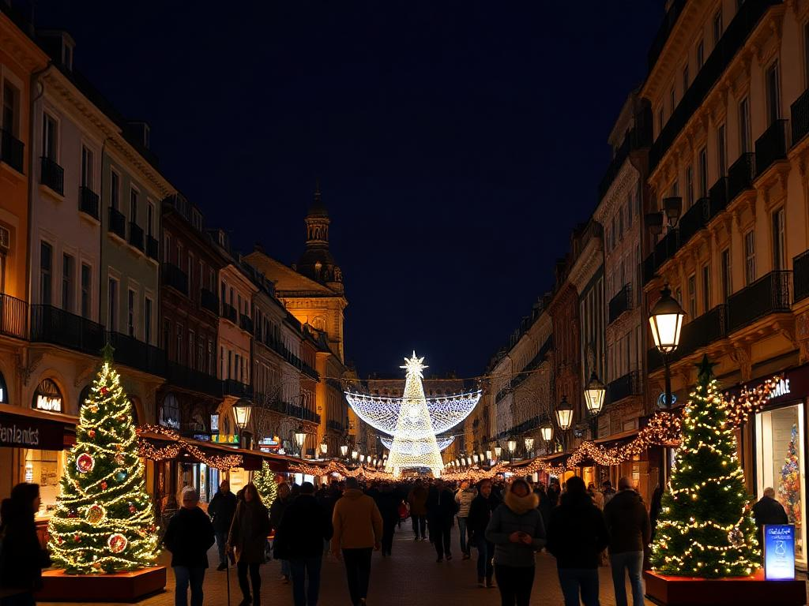

El encendido de luces ilumina la ciudad
La ciudad dio la bienvenida oficial a la Navidad con el tradicional encendido de luces en la plaza principal.
Este año, el diseño incluye figuras de renos, estrellas y un gran árbol de Navidad decorado con más de 10,000 luces LED.

El evento contó con la presencia de familias, turistas y músicos locales que ofrecieron conciertos navideños. Durante la inauguración,
el alcalde destacó la importancia de estas actividades para unir a la comunidad y promover el comercio local.
Además, se inauguraron puestos de artesanías y comida típica que estarán disponibles todas las tardes hasta el 6 de enero.
Concurso de villancicos en el colegio
El colegio Santa María celebró su concurso anual de villancicos el pasado fin de semana.
Los estudiantes de todas las edades participaron en este evento, demostrando su talento musical y su espíritu navideño.
Entre las actuaciones más destacadas estuvieron el coro de primaria, que interpretó "Noche de Paz", y el grupo de secundaria,
que presentó una versión moderna de "Campana sobre campana". El jurado elogió la creatividad y esfuerzo de todos los participantes.
Los ganadores recibieron premios consistentes en juguetes, libros y vales para tiendas locales.
El director del colegio expresó su gratitud hacia los padres y profesores que hicieron posible esta actividad.